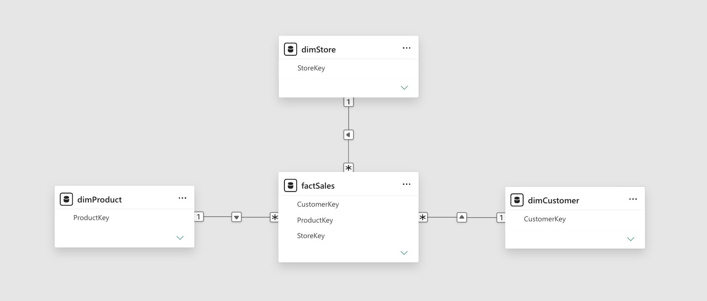
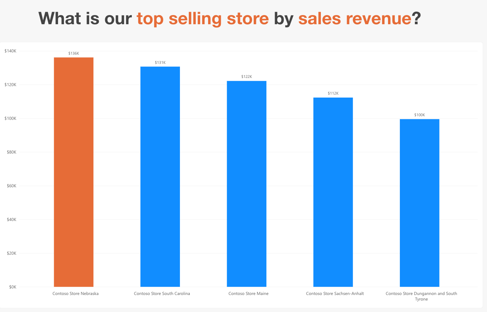
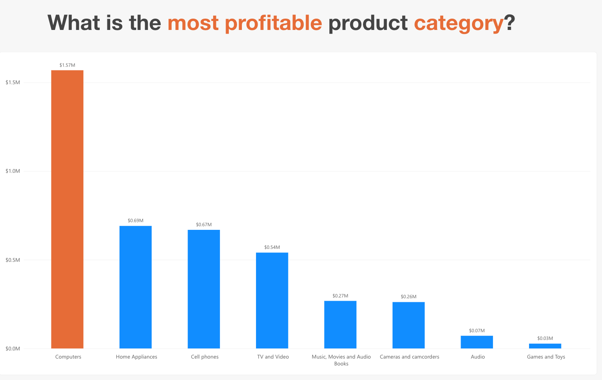
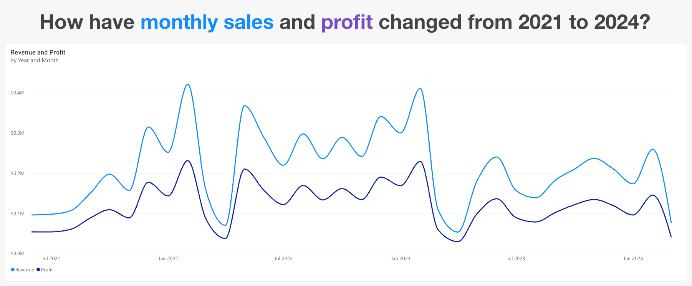
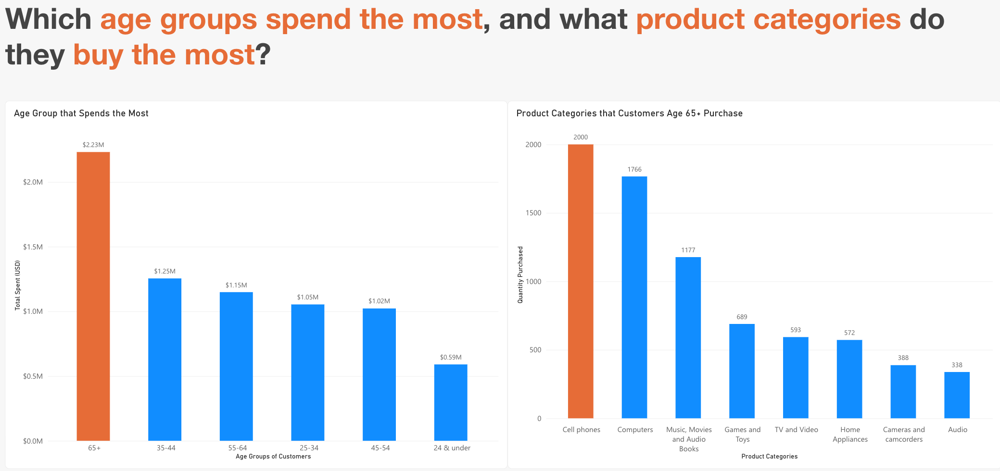
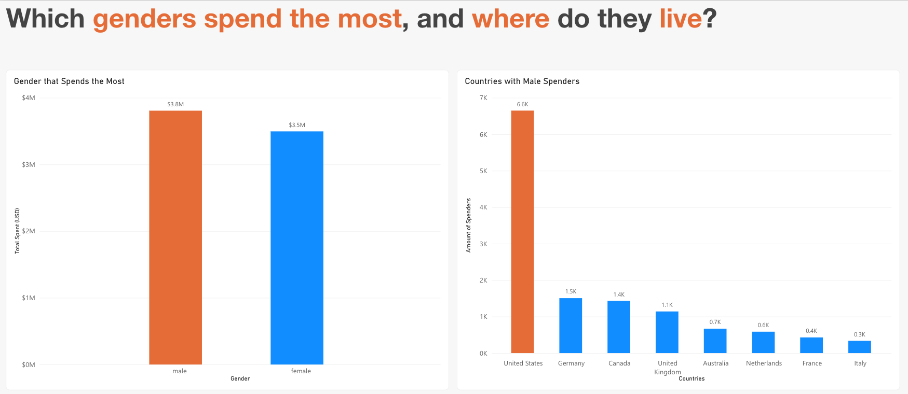

Skill · Business intelligence
Power BI
One retail sales dataset, modelled as a star schema, then used to answer nine business questions with visualization reports.
- Context
- INFO 3402, University of Colorado Boulder
- Tool
- Power BI Desktop
- Data
- factSales · dimProduct · dimCustomer · dimStore
00 · Preparation
Preparing the data
- Currencies
- Sales were recorded in several currencies, so adding them together directly would have mixed dollars, euros, and pounds. Each sale includes an exchange rate (local currency per US dollar), so I built a Revenue measure in DAX that divides each line's net price by its exchange rate before summing. Every revenue and profit figure in this report is in US dollars.
- Online vs store
- The online store generated about $4M in revenue, while the top physical store brought in about $136K, so including it would have flattened every store comparison. On the store ranking page, I excluded the online store with a filter to compare physical locations fairly. I kept online sales everywhere else, since they're real revenue for products, categories, and customers.
01 · Data model
The star schema

- factSales
- At the center of the star schema, factSales records every sale, each row in this table is one line of a customer's order, it is identified by OrderKey, and holds measurable numbers, such as Quantity, UnitPrice, NetPrice, UnitCost, and ExchangeRate. To grasp a full breakdown of sales, it utilizes three foreign keys, which are ProductKey, StoreKey, and CustomerKey. Each foreign key is connected to the table that describes it, in respective order dimProduct, dimStore, and dimCustomer.
- dimProduct
- This table describes the product, each row in this table is a product that appears once and is identified by ProductKey. This common identifier allows dimProduct to be linked to factSales. dimProduct includes descriptive fields which include ProductName, Brand, Manufacturer, Color, and Weight, and products are grouped by CategoryName and SubCategoryName. Each product is listed once in dimProduct, but it can be sold many times in factSales. This one-to-many link is what lets us total up sales for each product.
- dimStore
- This describes each store in the business, each row in this table is a store that appears once, that is identified by StoreKey. This common identifier allows dimStore to be linked to factSales. It includes the store's Description, location (State, CountryName), size (SquareMeters), and operating details (OpenDate, CloseDate, Status). Each store is listed once in dimStore, but it can have many sales in factSales. This one-to-many link is what lets us total up sales for each store.
- dimCustomer
- This describes who the customer is, each row in this table is a customer who appears once that is identified by CustomerKey. This common identifier allows dimCustomer to be linked to factSales. It includes personal details of the customer such as GivenName, Surname, Gender, Age, Birthday, Occupation and their location. Each customer is listed once in dimCustomer, but they can make many purchases in factSales. This one-to-many link is what lets us total up sales for each customer.
- Together
- Filters flow from the dimension tables into factSales. For example, selecting a product category or a customer's gender narrows down which sales rows are totaled in a visual.
02 · Products
What are our top selling products by volume per category?
- Finding
- Write-up in progress
- Built with
- Write-up in progress
03 · Products
What are our top selling products by sales revenue?

- Finding
- Write-up in progress
- Built with
- Write-up in progress
04 · Stores
What are our top selling stores by sales revenue?

- Finding
- Write-up in progress
- Built with
- Write-up in progress
05 · Categories
What are the most profitable product categories?

- Finding
- Write-up in progress
- Built with
- Write-up in progress
06 · Customers
Who are our repeat customers, and what do they buy?
- Finding
- Write-up in progress
- Built with
- Write-up in progress
07 · Delivery
How long do online customers wait for delivery?

- Finding
- Write-up in progress
- Built with
- Write-up in progress
08 · Trends
How have monthly sales and profit changed from 2021 to 2024?

- Finding
- Write-up in progress
- Built with
- Write-up in progress
09 · Demographics
Which age groups spend the most, and what product categories do they buy?

- Finding
- Write-up in progress
- Built with
- Write-up in progress
10 · Demographics
Which genders spend the most, and where do they live?

- Finding
- Write-up in progress
- Built with
- Write-up in progress